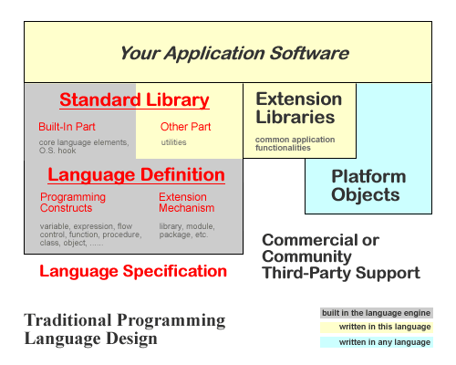
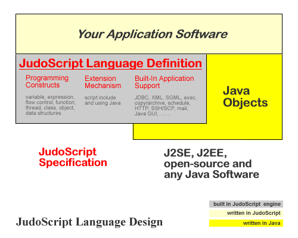

JudoScript White Paper
By James Jianbo Huang October 2002 UPDATED: July 2003  printer-friendly version
printer-friendly versionAbstract
JudoScript, or Judo for short, is a general-purpose, Java scripting and multi-domain language.
A full-fledged general-purpose scripting language with full capability of Java scripting,
JudoScript intimately supports most of today's key computing areas.
It is born out of the needs of directly using Java platform resources, intended to be a
more user-friendly scripting language with a 3GL-and-4GL design philosophy.
The result is a very high level language built atop a powerful programming environment
which greedily takes advantage of the vast amount of resources avaible to Java.
Its 4GL-style, domain-specific declarative programming features allow many tasks to be
specified intuitively, effectively and elegantly, avoiding tedious, error-prone,
high-stress, low-efficiency and no-fun programming as much as possible.
In enterprises, it is great for multi-source, multi-format data processing and reporting,
Java software prototyping and testing, off-line batch jobs, etc.
For individuals, JudoScript is a big collection of nifty and versatile productivity tools.
In your leisure as a programmer, JudoScript is also a fun language, intended to have rich and
powerful entertainment computing features.
JudoScript is the scripting language for the Java-Age.
This white paper describes its background, design philosophy and language structure.
It introduces the three key components of the language, namely the core language,
Java scripting and list of supported application features.
Sample code embellishes relevant sections for programmers to get a first-hand feel.
It compares JudoScript to other scripting languages, especially the Java-based ones,
and touches on its history and origin.
JudoScript is a general-purpose, Java scripting and multi-domain language.
What this means is, it has three tightly integrated parts:
a) a general-purpose scripting language,
b) a fully capable Java scripting tool, and
c) support for multiple domain-specific features.
It is designed and implemented in pure Java, born out of the needs of using
the riches in the Java platforms (J2SE and J2EE) and beyond.
Its design embraces both 3GL and 4GL philosophies, providing not only strong programming
support but also special mechanisms of "WYSIWYG" ("What-You-See-Is-What-You-Get") programming
for most of today's popular computing areas, making their uses easy, effective and elegant.
It is a higher-level language integrated in a robust, general-purpose Java scripting environment.
JudoScript is released under LGPL (Lesser GNU Public License), so you can do anything with it and
its source code, commercial or not, provided that the original copyright notice is retained.
It will follow up with the latest Java development,
and integrate with more cool LGPL or GPL open source Java projects.
The principle is simple: if something is useful and available,
JudoScript will make it easier to use and readily scriptable.
Today, Java is far beyond a programming language.
Going through Java packages shipped with J2SE and J2EE, one finds functionalities from basic
computing to enterprise computing. Open source projects provide even more functionalities,
so we can do SSH/SCP, PDF generation, FTP, Telnet, Windows ActiveX scripting, Unix syslog, ... all in Java.
Java has become a vast, growing pool of readily usable resources on multiple (if not all) platforms.
To use Java, however, coding in Java is not feasible.
Often times we need to quickly fix up something, such as going through a directory tree to
manipulate files, or checking a database for unprocessed orders, or retrieving information in an
XML document to create a report. For these one-time actions, rigorous Java coding is an overkill.
Other times, we create scripts for repetitive tasks that are run manually or automatically.
These scripts takes frequent updates and performance is not critical.
Edit-and-run can make a huge difference in productivity.
Another problem is verbosity of Java programs.
Java is a system language with low-level, fine-granularity APIs and language constructs
that enforce good software engineering. They become obstacles for scripting.
More over, coding in Java requires expertise that is at times not available or desirable.
Imaging trying to put a few files into a ZIP file using Java but you have never used
java.util.zip package.
The javadoc lists so many classes, you need to understand their meanings and relationships
before you can do anything with them.
As a user, I do not care whether java.util.zip.ZipFile or
bill.wonderutils.ZipArchive is used. All I care about is to create a zip file!
That is, the focus of the problem domain is easily blurred by implementational details of the APIs.
On the other hand, being a object-based platform, Java is natural for object scripting.
Every public class in Java can be scripted. It is a dream platform for scripting langauges.
Programmers should definitely take advantage of this, not limiting themselves to mere programming.
At the very least, this can make testing and prototyping much easier and more efficient.
In fact, with a good scripting tool, you can do so much more. Java is the future of scripting!
When we talk about scripting, we mean doing things easily and quickly.
Here is a definition of scripting and scripting languages:
Scripting (in programming sense) is to do things easily, intuitively, obviously and accurately,
so much so that when another person with the same domain knowledge sees a chunk of code,
he immediately understands it without even a hint of reasoning (ideally).
Scripting Support means very-high-abstraction-level language constructs or even domain-specific languages.
Scripting languages are (usually) general-purpose programming languages with one or more scripting support.
They are usually edit-and-run, and optionally provide compiling tools for performance, security and other reasons.
They are typically used for gluing applications and/or components to accomplish useful tasks easily, quickly and efficiently.
The follwoing are a few observations based on the needs to script and our definition of scripting.
- Game scripting languages are perfect examples.
They may be based on a general-purpose language but with very high level abstraction,
so that, for instance, a series of movements can be easily assembled by built-in constructs for twists and turns.
- JudoScript is a multi-domain scripting language, -- for OS level scripting, JDBC scripting, XML and SGML scripting, ActiveX scripting, and more.
- Unix shells are single-domain scripting languages, -- for OS level scripting.
- SQL is a domain-specific language but not a scripting language because you can't program with it.
- C, C++, Java, Perl, Python, Jython, Beanshell, JavaScript, Visual Basic, JudoScript, ...
are all programming languages for general purposes.
- Jython, Beanshell, Rhino and JudoScript are Java scripting languages for the "domain" of Java.
(Any potent Java programmer can recognize the Java usages in the code without much trouble.)
- Visual Basic (including VBA) is a scripting langauge for the "domain" of COM/ActiveX.
- Prolog? not so sure... there are certainly other categories that it can fit into (logic programming language or whatever).
What is the difference between Unix platforms and Java platforms from a programmer's perspective?
The abstraction level of built-in system features.
Java includes standard features that were considered pure application areas in Unix, such as JDBC,
internet, zip/jar, XML, encryption, etc. Today, they are an essential part of our everday lives.
Java has started an exciting era of converging all computing resources onto a single platform (with the exception of .Net)!
All the Java-based scripting languages before JudoScript only provide generic Java object-level scripting;
their OS- and application-level scripting essentially relies on Java's standard APIs, which are low-level and of fine granularity.
The design goal of JudoScript is
to provide an extraordinarily easy-to-use and powerful scripting tool, taking full advantage of the underlying Java platforms.
It shall be a good scripting language at the Java object level, OS level and application level for many popular areas.
Specifically,
- JudoScript shall be a powerful programming language that provides all of Java's programmability in a simpler and scripting way.
That is, its programming model shall be more flexible and easier to learn and use than that of Java.
- It shall be able to script Java objects and methods with few limitations.
- For many common computing tasks, it shall require as little coding as possible.
When coding is necessary, it shall be as intuitive as possible.
Therefore, it shall have a large number of programming tools at various abstraction levels,
from data structures to utilities to completely domain-specific constructs.
- It shall be easily extensible, particularly by Java libraries.
New application features shall be able to be extended seamlessly by any Java packages
without having to modify the language specification itself.
- It shall be complete and fun!
Its capabilities shall cover enterprise computing, individual productivity as well as
entertainment computing.
- As a policy, the language shall be open to any application areas that are or
will be appealing to general public, and make their uses as intuitively as possible.
New additions to the language shall maintain backward compatibility.
The last requirement is not technical but rather a promise to grow the language with time.
»»» Top | This Section «««
Computer languages can be generally categorized as algorithmic and declarative.
Algorithmic languages are mostly general-purpose.
Declarative languages are more domain-specific or computing-model-specific (e.g. SQL, VHDL and Prolog).
When people talk about programming languages, they normally refer to algorithmic languages.
JudoScript embraces both.
Traditionally, programming language definition includes two key components:
the basic programming constructs and an expansion mechanism.
The programming constructs include things like variable, expressions, flow control,
function and/or procedure, class and objects.
A programming language can be a complete language but totally useless,
without proper interface to the underlying operating system.
The extension mechanism is commonly known as libraries, packages or modules;
with that, language capabilities can be expanded unlimitedly.
Most languages implement the operating system interaction as libraries as a part of
the "standard" library that is defined to be a part of the language.
Therefore, a programming language specification includes a language definition
and a standard library.

Examples of such languages include C, C++, Java, Perl, Visual Basic, ...
Java is a totally object-based platform, with intricate object support including late binding and reflection API;
the "Platform Objects" portion in the diagram of the traditional programming language design
becomes more important in Java-based scripting language designs,
and the importance of "Extension Libraries" diminishes -- since platform objects are libraries.
The following diagram shows JudoScript's language design:

This diagram is simpler and cleaner than that of the traditional programming languages,
reflecting the fact that JudoScript is simpler in structure (without sacrificing computing power).
JudoScript includes many application features in the language definition,
and the library part has shrunk to virtually nothing.
To extend JudoScript, just write in Java!
If some functionality is worth sharing across many applications, write a Java class, perhaps of static memthods
only and alias them as
JudoScript methods.
(If no sufficient Java expertise is available, write JudoScript functions and classes and
include them in other programs.)
In other words, the burden of library development has been shifted to Java development,
which is a good thing because
a) such libraries can be used by Java software as well, and
b) reusable components are better developed in strongly-typed Java than
in type-unsafe scripting languages.
Other lighter-weight Java-based scripting languages are pretty much designed the same way,
except for a) few built-in application features and
b) less powerful programming support as JudoScript.
There is a vague term "Java extension languages" floating around; these languages may likely be what it refers to.
JudoScript adopts a procedural, object-oriented and thread hybrid programming model.
Functionally, JudoScript can be considered as composed of a base language system and various application features.
The base system is further divided into a language engine and a Java interaction engine.
Structurally, JudoScript includes three key components:
- syntax (general-purpose and special-purpose statements)
- a set of system functions and
- built-in object types.
»»» Top | This Section «««
The JudoScript core language is a familiar and powerful programming system.
It is a block-scoped language using curly-braces ("{" and "}").
JudoScript uses typeless variables with typed values. Each value is an object of primitive types or some class.
The primitive data types include integral and floating-point numbers, string, and date/time.
Objects can also be an instance of a user-defined class, a Java object, class or array,
a function reference, or any of its built-in object types and data structures, such as:
| Name | Description |
|---|
| array | one- or multi-dimensional linear container. |
| linkedList |
same as array but is implemented as a linked list. |
| Object | a map; is the root of all user-defined classes. User-defined classes can extend this. |
| OrderedMap |
same as struct except the order of keys added is retained. User-defined classes can extend this, too. |
| SortedMap |
similar to OrderedMap except the keys added are sorted. User-defined classes can not extend this. |
| Stack | a first-in-last-out container. |
| Queue | a first-in-first-out container. |
| Set and sorted set | a one-dimensional container that contains no duplicate elements,
and is optimized for testing of the existance of an element. |
| TableData |
a two-dimensional array with column captions and methods for retrieving rows or columns. |
| TreeNode |
a convenience for building a tree. User-defined classes can extend this. |
These built-in data structures are an integral part of the language with dedicated syntactic support,
allowing less coding for basic computing needs.
Classes and functions can be declared anywhere, in any order.
Classes can extend others; the root of user-defined class can be Object, OrderedMap, SortedMap or TreeNode.
Classes are nothing but a struct associated with a number of methods;
once an object is instantiated, it can be transposed to a compatible class.
Expressions are similar to Java or C; so are flow control statements.
The parentheses for the expression in if-else, switch, while and for are optional.
There is an extended for loop statement for enumerating array elements.
| Listing 1. Array and For, Switch Statements |
arr = [ 0, 1, 2, 3, 4 ];
for x in arr {
switch x {
case 0: println 'zero'; break;
case 1: println 'uno'; break;
default: println x; break;
}
}
|
Functions can be referenced and stored in variables.
This can be used for, say, special sorting of arrays:
| Listing 2. Custom Array Sorting |
a = [ '1.2', '3', '1.10', '1.2.1', '2.3' ];
a.sort( &my_comparator );
println a;
function my_comparator(lhs, rhs) {
la = lhs.csv('.');
ra = rhs.csv('.');
for i from 0 to la.size() {
if la[i].int() < ra[i].int() { return -1; }
if la[i].int() > ra[i].int() { return 1; }
}
if la.size() == ra.size() { return 0; }
return la.size() > ra.size();
}
|
In this example, we want '1.10' to appear after '1.2';
had we used array's default sort() method, it would be an alphabetical sort and '1.10' would go first.
Exceptions can be thrown by the JudoScript language engine or by the executed Java code.
They can be captured and handled. There is a resume statement (not found in Java).
| Listing 3. Exception Handling |
a = 1;
println 'a + "xyz" = ', a + "xyz"; // exception
println 'xyz' @ a = ', "xyz" @ a; // concat
catch:
println 'EXCEPTION: ', $_.message;
resume;
finally:
println 'Done.';
//The result:
// a + "xyz" = EXCEPTION: Invalid number format: xyz
// 'xyz' @ a = xyz1
// Done.
|
Thread programming is easy! A thread is declared just like a function.
The next example shows a multi-threaded HTTP server:
| Listing 4. Multi-Threaded HTTP Server |
thread httpHandler req {
req.serveFile(docRoot);
}
docRoot = '/var/share/';
println <err> 'Port: 8088';
ss = startServer(8088);
while {
start thread httpHandler(acceptHttp(ss));
}
//Singled-threaded HTTP server, use these:
// function httpHandler req { req.serveFile(docRoot); }
// while { httpHandler(acceptHttp(ss)); }
|
In traditional programming areas, JudoScript provides "syntactic sugar" and convenience
system functions to make them easier.
The following example shows how to easily read lines from a text file and process them
as comma-separated values:
| Listing 5. Read Files as Lines |
do 'data.txt' as lines {
rec = $_.csv(',');
println rec[0] :<10, ' ', rec[1] :>20, rec[2] :>20;
// left-align right-align right-align
}
|
| Listing 6. Read Files Within a Zip File as Lines |
do 'data.txt' in 'arch.zip' as lines {
println $_;
}
|
| Listing 7. Print the Content Of a GZipped Text File |
println getGZippedFileAsString('anything.txt.gz');
|
JudoScript is full of such conveniences.
»»» Top | This Section «««
Java scripting in JudoScript starts with the operator javanew.
(The new operator is used for JudoScript's own classes and objects.)
Once a Java object or array is created, they are used just like normal JudoScript objects or arrays, in most cases.
| Listing 8. Use Hashtable |
hash = javanew java.util.Hashtable;
hash.put( 'date', date(2001,1,1) );
hash.put( 'integer', 1 );
hash.put( 'double', 10.01 );
hash.put( 'string', 'Hello, World!' );
keys = hash.keys();
while keys.hasMoreElements() {
k = keys.nextElement();
println k, ' = ', hash.get(k);
}
|
The following example demonstrates the use of Java arrays:
| Listing 9. Use Java Arrays |
ba = javanew byte[]{ 0, 1, 2 };
for x in ba { println x; }
oa = javanew java.lang.Object[3];
oa[0] = javanew java.io.File('abc');
oa[1] = java.lang.System::out;
oa[2] = javanew java.util.Hashtable;
for x in oa { println x; }
|
As you have seen, static members of a Java class is accessed by the :: operator.
You can even alias a Java static method to become a JudoScript function;
some of the JudoScript system functions are indeed Java static methods.
| Listing 10. Use Java Static Methods as Functions |
function gc for java.lang.System::gc();
function props for java.lang.System::getProperties();
function getProp for java.lang.System::getProperty();
|
The system function initialContext() is designed specifically for EJB and JNDI client scripting.
It also has a number of convenience functions for major application server products such as
weblogicInitialContext(), websphereInitialContext(), etc.
| Listing 11. Create EJB Clients |
const #OrderHome = 'com.myecom.OrderHome';
ctx = weblogicInitialContext('t3://server','user','pass');
home = ctx.lookup(#OrderHome);
key = javanew com.myecom.OrderKey('00134');
order = home.findByPrimaryKey(key);
// ...
|
No long list of imports, no declaration of variables with long class names,
no casting everywhere and exceptions catching ...
Combined with JDBC scripting (such as querying for order keys), your scripts can do a lot of powerful work!
JudoScript can extend Java classes and implement Java interfaces through the mechanism of
Java extension class.
Java extension classs are dynamically created Java classes whose methods are implemented in JudoScript code.
They can declare Java fields and methods, all of which are always public.
Abstract methods, if not implemented, are given empty implementations.
| Listing 12. Extend Java Class |
class MyHashtable extendsjava java.util.Hashtable
{
// Test overriding an existing method
int hashCode() { return super.hashCode() ^ 1; }
// A new method.
String[] getKeys() {
arr = [];
for x in keys() { arr.append(x); }
return arr.toStringArray();
}
// A new method.
Object[] getValues() {
arr = [];
iter = values().iterator();
while iter.hasNext() { arr.append(iter.next()); }
return arr.toObjectArray();
}
}
|
| Listing 13. Extend Java Class and Interfaces |
class MySetIterator extendsjava java.util.HashSet, java.util.Iterator
{
java.util.Iterator iter;
// Iterator method
boolean hasNext() {
if iter == null {
iter = iterator(); // of HashSet.
}
return iter.hasNext();
}
// Iterator method
java.lang.Object next() {
return (iter == null) ? null : iter.next();
}
}
|
| Listing 14. Extend Java Abstract Class |
class MyStringWriter extendsjava java.io.Writer
{
// Data members
java.lang.StringBuffer buf;
// The optional one-and-only constructor
constructor initText {
super();
this.buf = javanew java.lang.StringBuffer;
if initText { buf.append(initText); }
}
// Abstract method given an empty implementation.
//void flush() {}
// Implement parent's abstract method
void close() { buf.setLength(0); }
// Implement parent's abstract method
void write(char[] cbuf, int off, int len) {
for i=off; i<off+len; ++i { buf.append(cbuf[i]); }
}
// Override parent's non-abstract methods
String toString { return buf.toString(); }
// Own method
String getString {
ret = buf.toString();
close();
return ret;
}
} // end of Java extension class MyStringWriter.
|
| Listing 15. Extend (Implement) Java Interface |
class MyIterator extendsjava java.util.Iterator
{
// All methods are given emty implementations. -- Just a test.
}
|
JudoScript provides two interfaces for embedding it in other Java software,
one is its own engine API,
the other is the support for BSF.
BSF (Bean-Script-Framework) is a common API
(developed by IBM) for Java software (e.g. Apache Ant) to interact with various scripting languages.
»»» Top | This Section «««
Domain-specific programming provides a way for WYSIWYG (What-You-See-Is-What-You-Get) coding.
WYSIWYG is a term for document editing software that displays the documents the same way as their printed counterpart.
It is borrowed here for JudoScript's 4GL features to describe exactly what you want to do without rigorous algorithmic programming.
The following is an incomplete list of JudoScript application features.
Some of them are implemented as system functions and objects, like the one in the HTTP,
server example above; some use WYSIWYG syntax, such as send mail, file and archives, etc.
The rest of this section presents some simple examples, just to show enough of the particluar features.
More detailed and complete examples are available in the technical articles.
| Listing 16. Send Mail |
sendMail
to: 'tom@tom_jerry.org, jerry@tom_jerry.org'
cc: 'mike@tom_jerry.org'
from: 'james@tom_jerry.org'
subject: 'Test test'
attach: 'data.zip, readme.txt'
body: [[*
Hi Tom and Jerry,
Attached is the data and usage. Enjoy!
-James
*]]
htmlBody: [[*
<html><body>
<p>Hi Tom and Jerry,</p>
<p>Attached is the data and usage.
<b>Enjoy!</b></p>
<p>-James</p>
</body></html>
*]]
;
|
| Listing 17. Excel Test using ActiveX Scripting |
xl = createActiveXComponent('Excel.Application');
println 'Version: ', xl.Version;
xl.Visible = true;
workbooks = xl.Workbooks;
workbook = workbooks.Add;
sheet = workbook.ActiveSheet;
a1 = sheet['Range', 'A1'];
a2 = sheet['Range', 'A2'];
a1.Value = 123.456;
a2.Formula = '=A1*2';
println 'a1 from excel: ', a1.Value;
println 'a2 from excel: ', a2.Value;
workbook.Close();
xl.Quit();
|
| Listing 18. Copying Files Into A Jar Archive |
// copy original Java files into src.jar
copy '*.java, *.judo' except '*/parser/*.java'
in srcDir recursive noHidden echo
into 'src.jar';
// archive original Java files and docs
jarFile = createJar('save.jar');
copy '*.java, *.judo' except '*/parser/*.java'
in srcDir recursive noHidden echo
into jarFile under 'src/';
copy '*' in docDor recursive noHidden echo
into jarFile under 'doc/';
jarFile.close();
|
XML SAX scripting, HTML scraping and Java GUI scripting use an event-driven model.
GUI programs do produce events, so it is natural.
For XML and HTML documents, the parser creates an "event" for each tag, which also include text,
and JudoScript allows to specify handlers for these events.
| Listing 19. HTML Scraping |
// print out links and text lengths in HTML
do 'http://www.yahoo.com' as sgml {
<a>: println 'URL: ", $_.href;
<img>: println 'URL: ", $_.src;
<link>: println 'URL: ", $_.src;
TEXT: println 'Text: length=', $_.length();
}
|
This HTML/SGML scripting feature has been used extensively to produce
JudoScript's documentation.
| Listing 20. Simplest Java GUI |
// A Swing GUI that does nothing.
frame = javanew javax.swing.JFrame("Hi!");
frame.setVisible(true);
guiEvents {
<frame : Window : windowClosing> : exit(0);
}
|
The built-in variable $_ representes the current event.
In the case of HTML or XML, it represents the tag itself.
In GUI programs, it is the event object in various listener methods.
A few other areas involve more complicated, special-purpose statements.
This includes schedule, command-line execution, and JDBC scripting.
JDBC scripting is one of the major inspirations for this very language.
SQL statements can be easily executed, either individually, in a group or in a batch.
Statements can be prepared, then executed with bound variables.
Stored procedures can be executed the same ways. The following example demonstrates creating tables,
inserting and querying with both prepared and direct executions.
Note the JDBC driver is automatically loaded based on the URL,
because JudoScript has knowledge about many JDBC drivers.
| Listing 21. JDBC Scripting |
connect 'jdbc:mysql://localhost/mydb', 'user', 'pass';
// (re-)create tables
tables = [ 'participants', 'media', 'people' ];
for x in tables { // drop tables if exist already
if tableExists(x) {
executeSQL: drop table (* x *);
}
}
executeSQL {
create table people
( personID int primary key,
name varchar(20) not null,
alias varchar(20),
sex varchar(1), // 'M', 'F'
addTime date
);
create table media
( folderID varchar(255) not null,
fileName varchar(128) not null,
type varchar(1) not null,
fileTime date,
bytes int,
addTime date,
constraint pathName primary key (folderID,fileName)
);
create table participants
( folderID varchar(255),
fileName varchar(128),
personID int,
constraint ref_media foreign key (folderID,fileName)
references media (folderID,fileName),
constraint ref_people foreign key (personID)
references people (personID)
);
} // end of executeSQL.
// insert
prepare mediatbl:
insert into media
(folderID,fileName,type,fileTime,bytes,addTime)
values (?,?,?,?,?,now())
;
executeUpdate mediatbl
with @1 = '/2001-06', // default type is "string".
@2 = 'DSC00001.jpg',
@3 = 'I',
@4:date = date(2001,6,3),
@5:int = 45044
;
println unit(mediatbl.updateCount,'row'),
" inserted into 'media' table.";
preparedExecuteUpdate partbl: // one-step prepare & execute.
insert into participants (folderID,fileName,personID)
values (?,?,?)
; with @1 = '/2001-06',
@2 = 'DSC00001.jpg',
@3:int = 1 // for alias 'bear'
;
println unit(partbl.updateCount,'row'),
" inserted into 'participants' table.";
// query
executeQuery q: select * from people order by alias ;
while q.next() {
println 'personID: ', q[1];
println ' name: ', q[2];
println ' alias: ', q[3];
println ' sex: ', q.SEX;
println ' addTime: ', q.addTime, nl, '--------';
}
catch: $_.printStackTrace();
finally: disconnect();
|
»»» Top | This Section «««
JudoScript is a general-purpose scripting language, and is designed to do many computing tasks quickly and effectively,
i.e., typically less coding is needed than strongly-typed system languages.
Because of its intimate built-in application support, JudoScript is especially strong for certain applications.
The following lists some of these.
Today, enterprise data reside in many locations in drastically different formats.
Relational database is probably the biggest data source,
but text files and spreadsheets are just as popular.
XML has gained so much momentum that the amount of data in XML and web services is expected to explode.
Sometimes, general SGML documents are used to store data.
With the commoditization of application servers, more complex data are commonplace, too.
For instance, on a J2EE platform, data can be represented in the form of enterprise Java beans,
which wrap around a number of database tables or data sources.
Data can also come from other running applications through connectors.
JudoScript is a perfect tool for multi-source, multi-format data processing.
Its native scripting support for JDBC, XML, SGML and Java software,
on top of the fundation of a powerful programming system,
provide all the necessary tools for cross-data-source tranformation, aggregation, analysis, reporting and transfer.
For instance, you can easily use the JDBC-ODBC bridge to read data stored in Microsoft Excel spreadsheet,
query a customer web application database and use the rules stored in an XML document to
synthesize a detailed user profile, and finally feed that information into an ERP system through a Java connector.
It is possible to create a JudoScript-based data processing system.
It is especially powerful for reporting for multi-source, multi-format data sources,
thanks to its ease of data access, programmability and accessibility to any Java resources.
It is possible to create a JudoScript-based reporting tool.
JudoScript's HTML/SGML scraping feature is very handy and can be used to create powerful documentation system.
In fact, all the documents on are generated from a central information repository,
which employs its own tagging system (i.e., general SGML documents).
There are various scripts to process different parts of the documents such as articles, references.
It is easy to modify a few scripts and change the whole look-and-feel.
The benefit of SGML-based system is that, you can take advantage of the programmability of
JudoScript to collect statistics and create global entities such as indices, etc.
SGML programming in JudoScript is almost identical to XML SAX-style programming in JudoScript but lighter weight.
JudoScript is great for testing J2EE and other distributed applications,
thanks to its built-in support for JNDI and networking.
You can retrieve an enterprise bean and tweak it so easily.
Working together with JDBC scripting and other features,
it is really easy to set up the test environment,
run the test and verify the result wither in database or in the file system or even on web (through HTML scraping).
JudoScript is also great for Java code unit testing.
It supports a pair of special tags, /*[judo] [judo]*/, as a special Java/C/C++ comment,
so you can embed test code right in the Java source file; the JudoScript engine ignores anything outside these tags.
It is possible to create a JudoScript-based testing tool for Java white-box testing and distributed application testing.
Scripting languages are well-known to be good for software prototyping.
JudoScript's coding style is similar to Java, and it can use Java at will,
therefore JudoScript is a perfect tool for Java application prototyping.
Prototyping can be done in a single, homogeneous environment.
The Java classes created along the way are tested and inspected in the process,
and can very well become part of the real software.
The scripts that sets up the database and other environment can well evolve into scripts for the final production system.
JudoScript is a unified platform for all the tools I have created so far as well for tools to be created in the future.
There are so many nifty utilities built right in besides the major functional areas mentioned above.
You can use them for everyday chores and actually enjoy them.
For instance, it has a database table dump utility allowing you to dump the whole or part of a database table.
It has a file chopping/unchopping utility to chop big files down to floppy, zip drive, CD-ROM or any size sub-files.
It has HTTP facilities to manipulate web resources easily.
It supports rich file operations that you can deal files stored in file systems and archives alike.
With a couple of lines of code, you can set up a HTTP server to publish your files to the network.
The versatile print statement can print out reports neatly.
Data value format transform, date/time convertions, ... there are many others.
One of the most performed action is file, directory and archive manipulation.
JudoScript provides, among other file manipulation commands, a powerful "copy" command that goes way beyond the basics.
It allows you to selectively copy files from a source, be it a directory or a jar/zip/tar archive,
into a destination, which can also be a directory or an archive of jar/zip/tar file.
You can even perform transformations of the files in the process.
For instance, you can prepend a copyright notice to all the source files in a directory tree,
or filter out files based on complex criteria beyond mere inclusive/exclusive patterns.
JudoScript is a fun idea, and it is built for fun.
The most fun you can have with a computer is probably through visual and audio effects.
JudoScript is intended to be strong in these areas, especially 2D and 3D graphics,
animation and music processing such as MIDI orchestra.
An experimental JMDL (JudoScript Music Description Language) has been defined.
This whole entertainment area is yet to be fully researched and explored at this writing.
»»» Top | This Section «««
The definition of scripting and scripting languages provides the basis for meaningfully comparing JudoScript and others.
»»» Top | This Section «««
In July 2001, the idea of making a JDBC scripting language somehow took shape.
A JDBC scripting language actually has to be a full-fledged programming language.
Before long, the idea also embraced EJB scripting and XML scripting. A study was conducted,
which concluded that such a scripting language based on Java had definite advantages over existing Java-based scripting languages.
Development commenced and progressed smoothly, and soon the language specification extended to more application fields.
In November of 2001, the first version was publicized, with the most of the functionalities as today and many articles.
During 2002, development continued. It was open-sourced in March.
In the meantime, numerous internal projects are carried out with heavy use of JudoScript itself,
such as the projects of comprehensive documentation and web-site building.
In December of 2002, version v0.8a is released.
The major additions included Java class extension and ActiveX scripting.
Thus, JudoScript is close to feature-complete, with the only exception of entertainment features
(mainly image processing and music features).
A programming language includes a language specification and its implementation and companion tools.
What is described above is for the language specification.
JudoScript has a command-line and a simple Swing GUI shell since its inception.
As the language specification is settling down, more and more tools will be produced, such as pre-compiler,
GUI debugger and studio, etc.
»»» Top | This Section «««
JudoScript is a great toolkit itself, and its licensing terms encourage people to use it within Java software products.
In fact, it has features specifically designed for easy customization.
As stated in the last point of the language design goal, JudoScript is open to good features with
decent Java implementation. So if you are a open-source Java developer, you are welcome to contact us to explore the
possibility to obtain native support in JudoScript for your features, because again,
if something is useful and available, JudoScript will make it easier to use and readily scriptable.
Since JudoScript is under LGPL, it is recommended that your software be under LGPL or even more open as well;
this way, your feature may be immediately available to any JudoScript users.
Otherwise, JudoScript may not be able to include your software, so the end users would have to make a separate download.
»»» Top | This Section «««
- Array and For, Switch Statements
- Custom Array Sorting
- Exception Handling
- Multi-Threaded HTTP Server
- Read Files as Lines
- Read Files Within a Zip File as Lines
- Print the Content Of a GZipped Text File
- Use Hashtable
- Use Java Arrays
- Use Java Static Methods as Functions
- Create EJB Clients
- Extend Java Class
- Extend Java Class and Interfaces
- Extend Java Abstract Class
- Extend (Implement) Java Interface
- Send Mail
- Excel Test using ActiveX Scripting
- Copying Files Into A Jar Archive
- HTML Scraping
- Simplest Java GUI
- JDBC Scripting